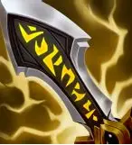
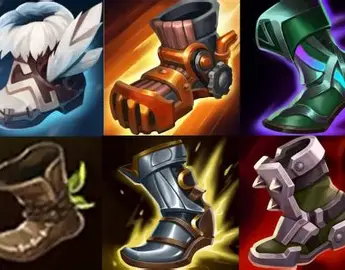

Home
The Legends
The Builds
League of Legends - Items Showcase
Popular LOL Items

Infinity Edge
- A must-have for ADCs to boost critical strikes.
Rabadon's Deathcap
- Maximizes AP for burst mages.
Sunfire Cape
- Great for tanks to deal area damage.

Boots of Speed
- Essential for faster map movement.